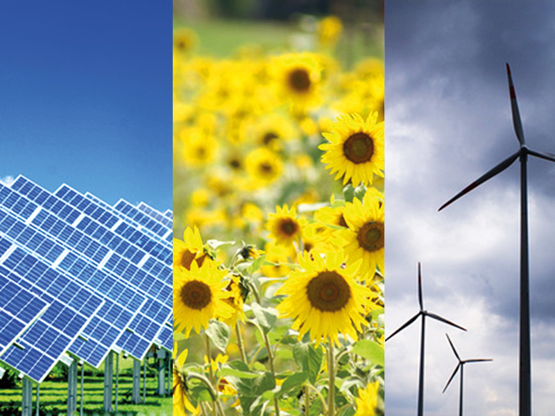

Introducción
Las fuentes de energía son fundamentales para el desarrollo y la sostenibilidad de la sociedad moderna.
En esta entrevista, exploraremos varias fuentes de energía, desde las más tradicionales hasta las más
innovadoras. Cada fuente tiene sus características, ventajas y desventajas, y es esencial comprender
su impacto en el medio ambiente y en nuestra vida diaria.
México es un país con un potencial energético diverso y abundante, que se caracteriza por la combinación de fuentes renovables y no renovables. A lo largo de las últimas décadas, el país ha avanzado en la búsqueda de un equilibrio entre el desarrollo económico y la sostenibilidad ambiental. Las principales fuentes de energía en México incluyen la energía hidroeléctrica, eólica, solar, geotérmica, así como los combustibles fósiles como el petróleo, el gas natural y el carbón.

La energía hidroeléctrica ha sido una fuente tradicional y significativa, aprovechando la geografía montañosa del país. En años recientes, la energía eólica y solar han experimentado un crecimiento exponencial, posicionando a México como uno de los líderes en energías limpias en América Latina. La reforma energética de 2013 impulsó la inversión privada y la diversificación del sector energético, promoviendo el uso de tecnologías limpias y la reducción de la dependencia de los combustibles fósiles.
A pesar de los avances, México enfrenta desafíos en términos de infraestructura, acceso a la energía en comunidades rurales y la transición hacia un modelo energético más sostenible. La diversificación de las fuentes de energía y la implementación de políticas públicas efectivas son cruciales para asegurar un futuro energético sostenible, que fomente el desarrollo económico y respete el medio ambiente.
Este contexto dinámico y cambiante destaca la importancia de las fuentes de energía en el desarrollo del país, así como la necesidad de un enfoque integral que contemple la eficiencia, la sostenibilidad y la equidad en el acceso a la energía.
Fuentes de Energia mas comunes en Mexico
1. Energía Térmica: Esta es la fuente más significativa, representando una gran parte de la generación eléctrica. Se basa principalmente en la quema de combustibles fósiles, como el gas natural, el carbón y el petróleo.La energía térmica es una de las principales fuentes de generación de electricidad en México y en el mundo. Se produce a partir de la combustión de combustibles fósiles, como el gas natural, el carbón y el petróleo. Este proceso implica calentar agua para generar vapor, que a su vez mueve turbinas conectadas a generadores eléctricos. Aunque es una fuente eficiente y confiable, la generación de energía térmica también plantea desafíos ambientales, como la emisión de gases de efecto invernadero y otros contaminantes. En respuesta a estas preocupaciones, muchos países, incluido México, están trabajando para diversificar su matriz energética y aumentar la proporción de fuentes renovables. Sin embargo, la energía térmica sigue siendo un pilar fundamental en el suministro eléctrico, especialmente en épocas de alta demanda.
2. Energía Hidroeléctrica: México tiene un potencial considerable en energía hidroeléctrica, gracias a su geografía. Las plantas hidroeléctricas aprovechan el flujo de ríos y embalses para generar electricidad.La energía hidroeléctrica es una de las fuentes renovables más importantes en México y en muchos otros países. Se genera aprovechando el flujo de agua de ríos y embalses, que mueve turbinas conectadas a generadores eléctricos. Este tipo de energía es conocida por su capacidad de producir grandes cantidades de electricidad de manera constante y confiable. En México, la energía hidroeléctrica representa una parte significativa de la matriz energética, contribuyendo a la estabilidad del sistema eléctrico. El país cuenta con diversas plantas hidroeléctricas, muchas de las cuales se encuentran en zonas montañosas con recursos hídricos abundantes. Además de ser una fuente limpia y renovable, la energía hidroeléctrica también tiene beneficios adicionales, como la capacidad de regular el suministro de agua y proporcionar almacenamiento de energía. Sin embargo, la construcción de grandes represas puede tener impactos ambientales y sociales significativos, lo que ha llevado a un mayor enfoque en proyectos más sostenibles y de menor escala. A medida que México avanza hacia una transición energética más sostenible, la energía hidroeléctrica seguirá desempeñando un papel clave en su estrategia energética.
3. Energías Renovables: En los últimos años, ha habido un creciente impulso hacia las energías renovables. La energía solar y eólica han cobrado especial relevancia, favorecidas por políticas gubernamentales y un aumento en la inversión privada.La energía renovable proviene de recursos naturales que se regeneran de forma continua, como el sol, el viento, el agua y la biomasa. Este tipo de energía es esencial para reducir la dependencia de combustibles fósiles y mitigar el cambio climático. Con tecnologías en constante evolución, las energías renovables se están convirtiendo en alternativas limpias y accesibles, impulsando una transición hacia un futuro energético más sostenible y seguro.
4. Energía Nuclear: Aunque representa una pequeña proporción de la generación total, México opera una planta nuclear en Laguna Verde, Veracruz, que contribuye a la estabilidad de la red eléctrica.La energía nuclear se genera a través de reacciones de fisión, donde los núcleos de átomos pesados, como el uranio, se dividen, liberando grandes cantidades de energía en forma de calor. Este calor se utiliza para producir vapor, que mueve turbinas y genera electricidad. En México, la energía nuclear representa una parte pequeña pero significativa de la matriz energética, con la planta de Laguna Verde como la principal instalación. Aunque es una fuente de energía de baja emisión de carbono, la energía nuclear plantea desafíos como la gestión de residuos radiactivos y la seguridad en caso de fallos. A medida que el mundo busca diversificar sus fuentes de energía y reducir las emisiones, la energía nuclear se considera una opción viable para garantizar un suministro estable y minimizar el impacto ambiental.
El panorama energético en México está en evolución, con un fuerte enfoque en la sostenibilidad y la transición hacia un sistema más limpio. La reforma energética de 2013 ha abierto el mercado a la inversión privada, lo que ha facilitado el desarrollo de proyectos renovables y ha buscado diversificar las fuentes de generación para garantizar la seguridad energética del país.